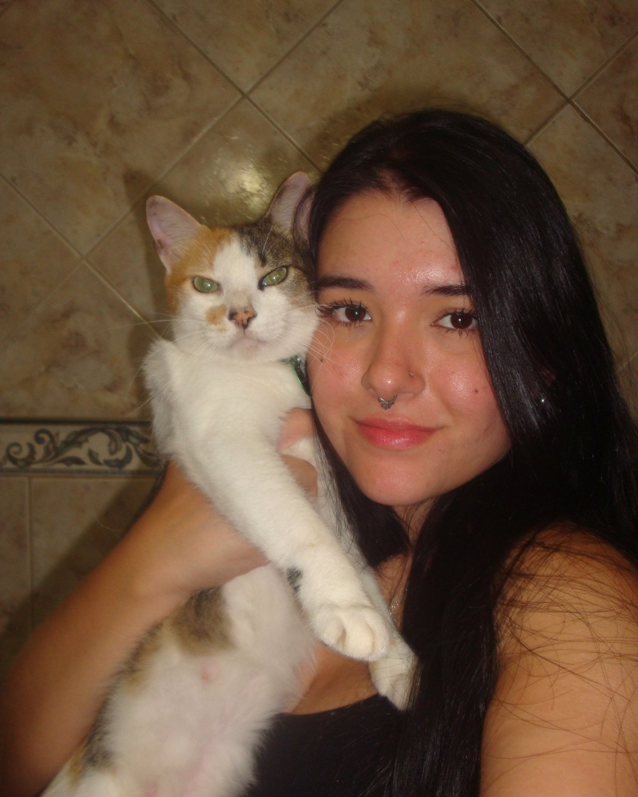
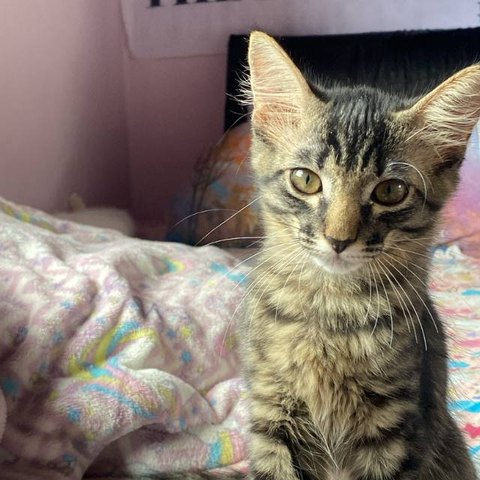
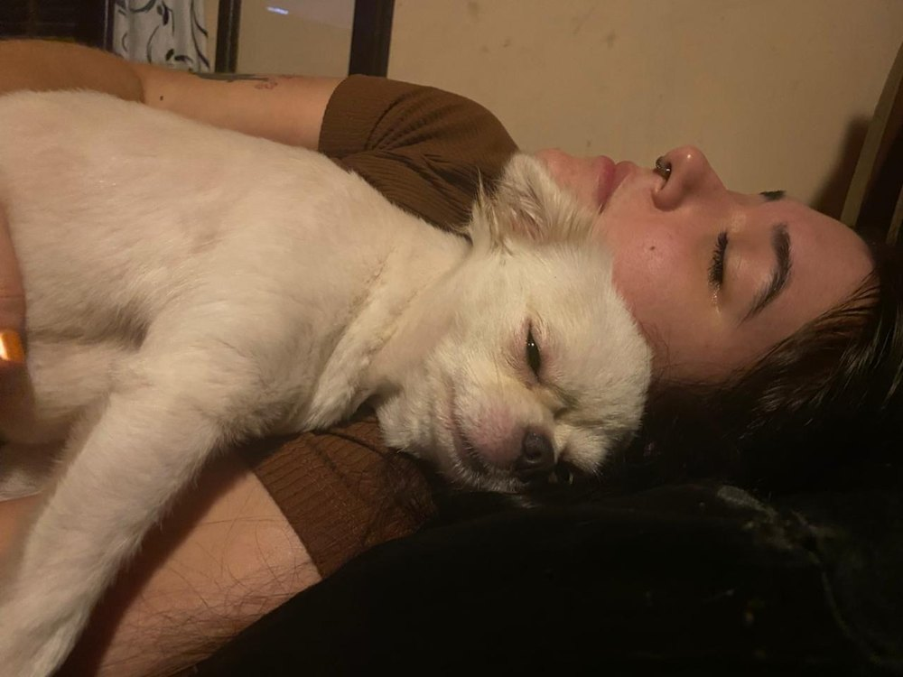
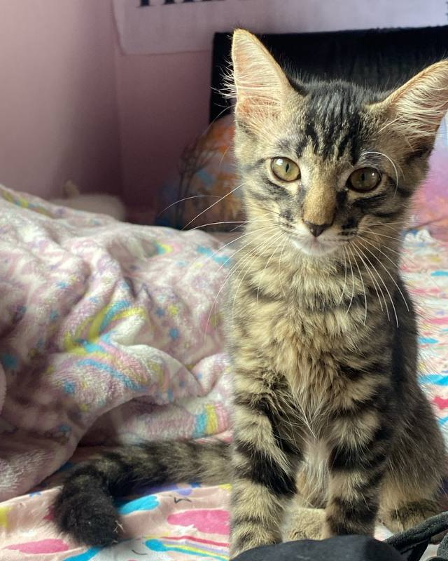

Alimentação e água fresca
Seguir horários, quantidades e orientações do tutor, favorecendo a hidratação e a rotina alimentar.
ImportânciaConsistência na alimentação e água disponível contribuem para o conforto e o bem-estar.
Cuidado domiciliar com afeto e rotina
Cuidados domiciliares personalizados para seu pet manter sua rotina enquanto você trabalha, viaja ou resolve seus compromissos.
Agendar pré-visita gratuita
Olá, eu sou a Isabella. Vamos cuidar do seu pet juntas?
Ambiente familiar
Respeito ao tempo do pet
Atualizações durante as visitas
Pré-visita gratuita
O que é Pet Sitting?
Pet sitting é o cuidado do seu animal na sua casa, por meio de visitas combinadas previamente. Em vez de mudar de ambiente, ele permanece na rotina que conhece, com alimentação, água, higiene, companhia e atenção.
O trabalho vai além de oferecer comida e água: envolve atenção, observação e respeito às necessidades individuais de cada animal. Cada pet tem seu jeito, seu ritmo e suas preferências.
Rotina preservada, ambiente familiar e companhia no tempo certo. O objetivo é oferecer cuidado e tranquilidade, sem prometer eliminar estresse ou ansiedade — cada animal responde de forma única.

O pet fica na própria casa, com cheiros, espaços e referências conhecidas.
Horários e orientações do tutor guiam cada visita, com atenção ao individual.
Fotos, vídeos e um resumo ajudam você a acompanhar o bem-estar do pet.
Serviços
Os serviços são combinados de acordo com a espécie, a personalidade do animal e as necessidades da sua rotina. Você recebe uma proposta clara antes da contratação.
Seguir horários, quantidades e orientações do tutor, favorecendo a hidratação e a rotina alimentar.
ImportânciaConsistência na alimentação e água disponível contribuem para o conforto e o bem-estar.
Limpeza da caixa de areia dos gatos e higiene básica do ambiente, contribuindo para conforto e bem-estar.
ImportânciaUm ambiente limpo e organizado favorece a saúde, o descanso e a sensação de segurança.
Interação respeitosa e estímulos adequados ao temperamento e à energia do animal.
ImportânciaEstímulos e presença podem tornar o tempo sozinho mais leve, sempre respeitando os limites de cada pet.
Passeios para cães de pequeno e médio porte, respeitando segurança, ritmo e necessidades individuais.
ImportânciaO movimento faz parte da rotina canina e contribui para disposição, exploração e bem-estar.
Cuidados na casa do tutor durante viagens, dias de trabalho longos ou outros compromissos.
ImportânciaSeu pet permanece no ambiente familiar, com a rotina mais próxima do que já conhece.
Atendimento adaptado à rotina e às orientações fornecidas, com espaço para conversar e ajustar detalhes.
ImportânciaCada animal tem necessidades próprias; o cuidado individual respeita o jeito e o tempo de cada um.
Atualizações durante as visitas para tranquilizar o tutor e mostrar como o pet está.
ImportânciaAcompanhar de perto o cuidado transmite confiança e ajuda você a manter o vínculo mesmo quando está longe.
Cuidados por espécie
Abra cada card para ver os cuidados, a importância de cada um e a atenção necessária durante viagens. As orientações do tutor e do médico-veterinário responsável são sempre priorizadas.
Alimentação nos horários e porções combinados, troca de água, limpeza da caixa de areia, companhia e brincadeiras respeitando o tempo do gato.
Higiene, estímulos e familiaridade com o ambiente contribuem para o conforto e o bem-estar. A rotina e a casa conhecida ajudam o gato a se sentir mais seguro.
Verificar alimento, água, caixa de areia e segurança do ambiente, observando apetite, comportamento e uso da caixa.
Alimentação, água fresca, companhia, brincadeiras e passeios quando contratados, respeitando o ritmo e as necessidades do cão.
Movimento e estímulos fazem parte do bem-estar canino e ajudam a manter a disposição e a rotina. Cada cão tem sua energia e seu jeito de interagir.
Manter horários e observar apetite e disposição. Passeios e atividades seguem o que foi combinado na pré-visita.
Alimentação e água conforme as orientações, observação geral e higiene básica combinada do espaço.
A alimentação adequada e a segurança do recinto são essenciais. Cada espécie tem necessidades próprias, e as orientações do tutor devem ser seguidas.
Seguir as orientações específicas da espécie e evitar manejos complexos sem preparo. Alterações de comportamento ou saúde são comunicadas ao tutor.
Alimentação orientada, água fresca, feno quando fizer parte da rotina e higiene básica do recinto.
Alimentação e ambiente seguro são fundamentais para o conforto e o bem-estar. Pequenas mudanças podem afetar a rotina, por isso o manejo é feito com calma.
Observar apetite, fezes e comportamento, mantendo o recinto seguro e seguindo as orientações fornecidas pelo tutor.
Alimentação controlada e observação visual do aquário, seguindo as orientações do tutor.
Evitar o excesso de alimento e preservar a estabilidade da água são pontos importantes para o ambiente aquático.
Manter a alimentação no volume indicado e observar visualmente o aquário. Não estão incluídos serviços de manutenção técnica especializada.
Alimentação orientada, água quando aplicável e observação básica do recinto.
Condições ambientais adequadas e o respeito às orientações específicas são essenciais para o bem-estar do animal.
Seguir a rotina e as orientações fornecidas, observando o recinto e comunicando qualquer alteração ao tutor.
Cada espécie tem necessidades próprias. Meu trabalho é seguir as orientações do tutor e observar o bem-estar do animal. Não realizo diagnósticos, tratamentos ou procedimentos veterinários.

“Cuidar é observar, respeitar e estar presente do jeito que cada pet precisa.”
Isabella DestriSobre mim
Oi! Sou Isabella Destri, tenho 22 anos e os animais fazem parte da minha vida há muito tempo.
Atualmente, tenho quatro gatos e sempre tive cachorros. Também já cuidei de peixes e tive aquário, coelhos, dois ratos e hamster. Meu pai é aquarista, e esse contato ampliou meu interesse pelos cuidados com diferentes animais.
Sou estudante de Psicologia e faço parte de uma liga acadêmica de Terapia Assistida com Animais. Tenho interesse pela relação entre pessoas e animais e sonho em cursar Medicina Veterinária no futuro.
Como Pet Sitter, quero oferecer cuidados atenciosos e personalizados, respeitando a rotina e o jeito de cada pet. Valorizo a conversa com o tutor, o alinhamento dos cuidados e as atualizações durante as visitas.
Atuo como Pet Sitter, não como veterinária, psicóloga formada ou especialista em comportamento animal. Questões de saúde são encaminhadas ao tutor e ao médico-veterinário responsável.
Como funciona
A pré-visita gratuita é o nosso primeiro encontro. É o momento de conhecer o pet, entender a rotina e alinhar todos os detalhes antes da contratação.
Você explica as necessidades do pet, o período desejado e tira suas dúvidas pelo WhatsApp.
Conheço o animal e o ambiente, converso com o tutor e alinhamos os cuidados e as particularidades.
Combinamos datas, horários, atividades, frequência e valores de acordo com a rotina.
Realizo os cuidados combinados e envio fotos, vídeos e um resumo ao tutor.
Quer conhecer o cuidado de perto?
Agendar pré-visita gratuitaPara quem é
Se a agenda aperta, a viagem chega ou os compromissos se acumulam, você não precisa resolver tudo sozinho. O cuidado pode ser planejado com antecedência e adaptado ao seu pet.
Compromissos longos e horários imprevisíveis podem deixar a rotina do pet em segundo plano. As visitas ajudam a manter alimentação, água, higiene e companhia.
Seu pet fica no ambiente familiar, com a rotina combinada e atualizações durante as visitas. Você acompanha de longe e viaja com mais tranquilidade.
Consultas, imprevistos ou dias corridos acontecem. O cuidado é adaptado à necessidade do pet e ao que for possível combinar com você.
Pedir apoio é uma forma de cuidado. O importante é que seu pet continue sendo acompanhado com atenção e respeito.
Para facilitar
Use o checklist para organizar as informações do seu pet e veja como uma atualização pós-visita pode chegar até você.
Itens para adiantar a conversa e deixar os cuidados mais claros.
Marque os itens conforme for organizando.

Olá! Tudo bem por aqui.
O pet comeu bem, brincou um pouco e já está descansando no cantinho favorito. Água fresca e caixa de areia em ordem. Envio mais fotos na próxima visita.
Simulação de mensagem. Não representa um atendimento real. O formato e a frequência das atualizações são combinados com cada tutor.
Dúvidas frequentes
Se a sua pergunta não estiver aqui, me chame pelo WhatsApp. A conversa inicial não tem compromisso.
Tirar uma dúvidaA quantidade e a duração das visitas dependem do pet e da rotina da casa. Horários, atividades e frequência são combinados na pré-visita gratuita e no planejamento.
Atendo gatos, cães de pequeno e médio porte, pássaros, coelhos, peixes e jabutis, sempre respeitando as necessidades de cada espécie e as orientações do tutor. Outras espécies podem ser conversadas antes da contratação.
Sim. A pré-visita é uma conversa e visita inicial para conhecer o animal, o ambiente e alinhar os cuidados, sem custo e sem compromisso de contratação.
Sim. As visitas podem ser planejadas para períodos de viagem, com rotina, segurança e atualizações combinadas previamente. O ideal é conversar com antecedência para organizar a agenda.
Sim. As atualizações podem incluir fotos, vídeos e um resumo da visita. O formato, a frequência e o canal são acordados com você antes do início do cuidado.
A agenda varia conforme a disponibilidade, a rotina e a frequência das visitas. Fale pelo WhatsApp para verificar os horários possíveis para o período que você precisa.
Os valores são combinados conforme os cuidados, a duração, a frequência e o deslocamento. A pré-visita gratuita ajuda a montar uma proposta adequada para cada rotina, sem surpresas.
Em caso de alteração de saúde, você será comunicado e será seguido o plano de emergência previamente combinado, buscando assistência veterinária quando necessário. Não realizo diagnósticos, tratamentos ou procedimentos veterinários.
Vamos conversar
Conte um pouco sobre seu pet e o período desejado. A conversa começa pelo WhatsApp; a pré-visita gratuita vem depois, sem compromisso.
Mensagens são respondidas assim que possível. A pré-visita gratuita é o primeiro passo para alinharmos tudo.